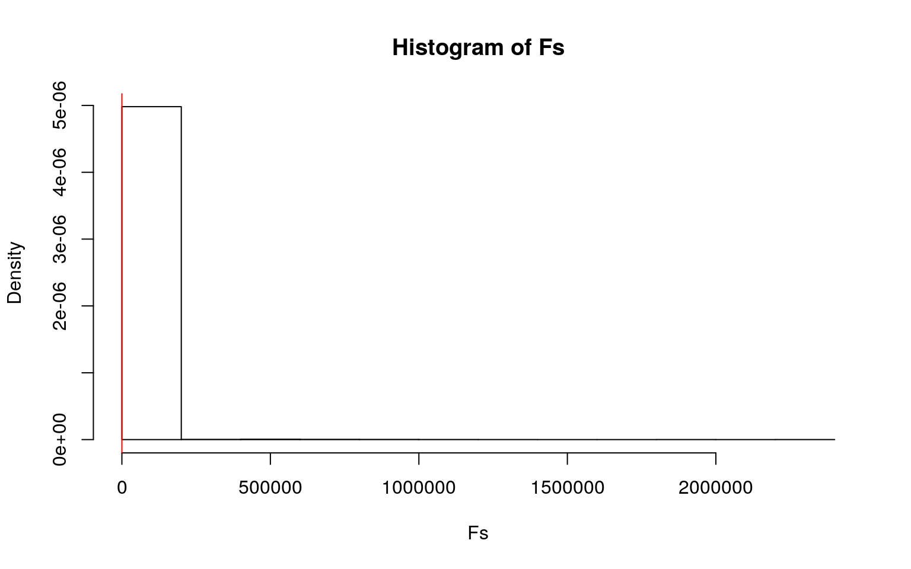
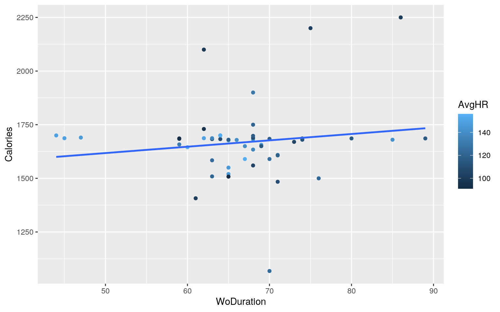
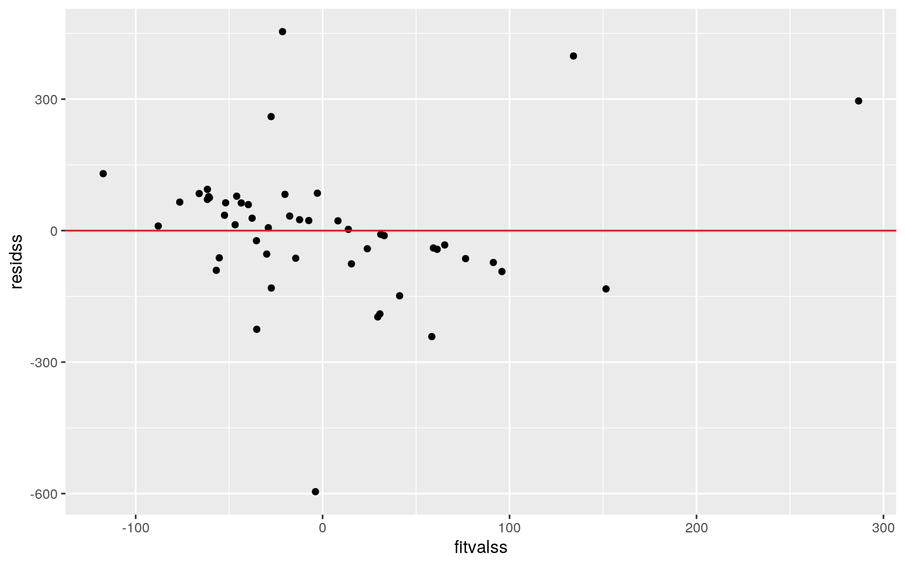
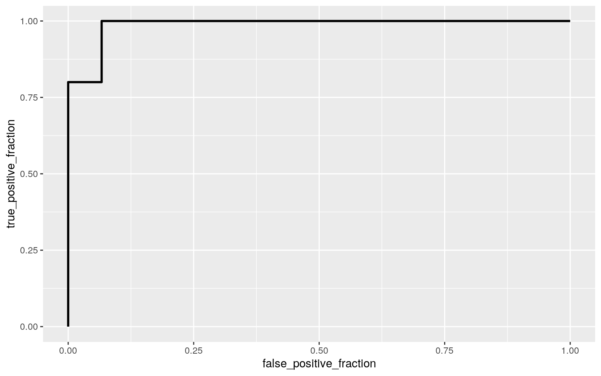
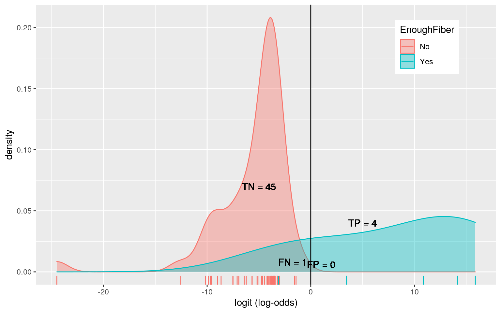
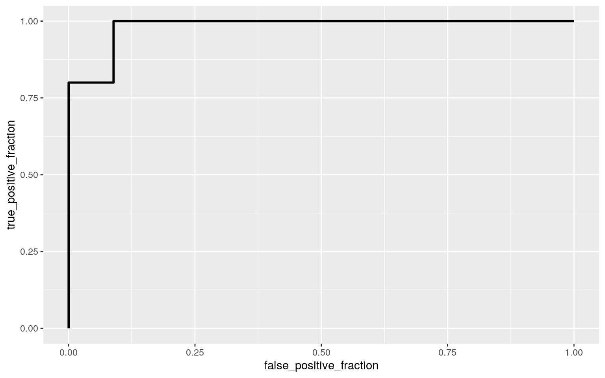
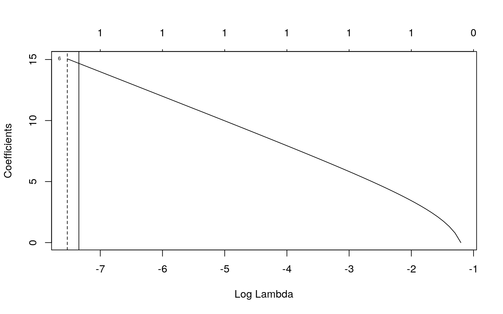

#0.
This project was a very interesting one and as such I thought loud and hard about what data I was going to use for it! I am quite passionate about health and fitness. The variables that I collected using MyFitnessPal are Calories, which is the number that I consumed each day and EnoughFiber which is whether or not I got the recommended amount of fiber for the day. The variables that I got from my workout tracker are MaxHR, which is my maximum heart rate, AvgHR, which is my average heart rate, and WoDuration which is the duration of my workout. I expect that there will be a positive correlation between AvgHR and MaxHR.
#1.
library(tidyverse)
HeartRateStats <- read_csv("HeartRateStatsss.csv")
HR <- HeartRateStats
HR## # A tibble: 50 x 4
## Day MaxHR AvgHR WoDuration
## <dbl> <dbl> <dbl> <dbl>
## 1 1 184 149 65
## 2 2 175 109 64
## 3 3 184 116 80
## 4 4 160 100 59
## 5 5 180 142 68
## 6 6 170 124 70
## 7 7 180 142 85
## 8 8 160 100 86
## 9 9 169 116 89
## 10 10 165 108 68
## # … with 40 more rowsMyFitnessPalStatsProject <- read_csv("MyFitnessPalStatsProject.csv")
bigboi <- full_join(HR, MyFitnessPalStatsProject, by = c("Day"))
bigboi## # A tibble: 50 x 6
## Day MaxHR AvgHR WoDuration Calories EnoughFiber
## <dbl> <dbl> <dbl> <dbl> <dbl> <chr>
## 1 1 184 149 65 1677 No
## 2 2 175 109 64 1683 No
## 3 3 184 116 80 1686 No
## 4 4 160 100 59 1684 No
## 5 5 180 142 68 1682 No
## 6 6 170 124 70 1068 No
## 7 7 180 142 85 1680 No
## 8 8 160 100 86 2250 Yes
## 9 9 169 116 89 1686 No
## 10 10 165 108 68 1689 No
## # … with 40 more rowsman112 <- manova(cbind(MaxHR, AvgHR, WoDuration, Calories) ~
EnoughFiber, data = bigboi)
summary(man112)## Df Pillai approx F num Df den Df Pr(>F)
## EnoughFiber 1 0.51401 11.899 4 45 1.118e-06 ***
## Residuals 48
## ---
## Signif. codes: 0 '***' 0.001 '**' 0.01 '*' 0.05 '.' 0.1
' ' 1summary.aov(man112)## Response MaxHR :
## Df Sum Sq Mean Sq F value Pr(>F)
## EnoughFiber 1 97.07 97.069 1.6885 0.2
## Residuals 48 2759.51 57.490
##
## Response AvgHR :
## Df Sum Sq Mean Sq F value Pr(>F)
## EnoughFiber 1 1286.9 1286.94 3.8659 0.05507 .
## Residuals 48 15978.8 332.89
## ---
## Signif. codes: 0 '***' 0.001 '**' 0.01 '*' 0.05 '.' 0.1
' ' 1
##
## Response WoDuration :
## Df Sum Sq Mean Sq F value Pr(>F)
## EnoughFiber 1 141.1 141.120 1.9691 0.167
## Residuals 48 3440.0 71.667
##
## Response Calories :
## Df Sum Sq Mean Sq F value Pr(>F)
## EnoughFiber 1 728585 728585 45.37 1.87e-08 ***
## Residuals 48 770813 16059
## ---
## Signif. codes: 0 '***' 0.001 '**' 0.01 '*' 0.05 '.' 0.1
' ' 1pairwise.t.test(bigboi$Calories, bigboi$EnoughFiber, p.adj = "none")##
## Pairwise comparisons using t tests with pooled SD
##
## data: bigboi$Calories and bigboi$EnoughFiber
##
## No
## Yes 1.9e-08
##
## P value adjustment method: noneThere were six total tests done which gives us a new p-value of 0.008. The chance of a Type 1 Error is 26.49%. As for the manova assumptions, it is likley that the linear relationships among DVs, and the no extreme univariate or multivariate outliers was met. The other ones were probably not honestly.
#2.
summary(aov(Calories ~ EnoughFiber, data = bigboi))## Df Sum Sq Mean Sq F value Pr(>F)
## EnoughFiber 1 728585 728585 45.37 1.87e-08 ***
## Residuals 48 770813 16059
## ---
## Signif. codes: 0 '***' 0.001 '**' 0.01 '*' 0.05 '.' 0.1
' ' 1obs_F <- 45.37
Fs <- replicate(5000, {
new <- bigboi %>% mutate(Cals = sample(Calories))
SSW <- new %>% group_by(EnoughFiber) %>% summarize(SSW = sum((Cals -
mean(Cals))^2), .groups = "keep") %>% summarize(sum(SSW),
.groups = "keep") %>% pull
SSB <- new %>% mutate(mean = mean(Cals)) %>% group_by(EnoughFiber) %>%
mutate(groupmean = mean(Calories)) %>% summarize(SSB = sum((mean -
groupmean)^2), .groups = "keep") %>% summarize(sum(SSB),
.groups = "keep") %>% pull
(SSB/1)/(SSW/48)
})
hist(Fs, prob = T)
abline(v = obs_F, col = "red", add = T)
mean(Fs > obs_F)## [1] 0.4941The null is that there is no significant difference between the EnoughFiber groups when it comes to Calories. The alternative hypothesis is that there is a significant difference between the EnoughFiber groups when it comes to calories. The results of the test indicates that we should reject our null and conclude that there is a significant difference between EnoughFiber groups when it comes to calories!
#3
# install.packages('lmtest')
library(lmtest)
library(sandwich)
library(tidyverse)
bigboi## # A tibble: 50 x 6
## Day MaxHR AvgHR WoDuration Calories EnoughFiber
## <dbl> <dbl> <dbl> <dbl> <dbl> <chr>
## 1 1 184 149 65 1677 No
## 2 2 175 109 64 1683 No
## 3 3 184 116 80 1686 No
## 4 4 160 100 59 1684 No
## 5 5 180 142 68 1682 No
## 6 6 170 124 70 1068 No
## 7 7 180 142 85 1680 No
## 8 8 160 100 86 2250 Yes
## 9 9 169 116 89 1686 No
## 10 10 165 108 68 1689 No
## # … with 40 more rowsbigboi %>% ggplot(aes(WoDuration, Calories, color = AvgHR)) +
geom_point() + geom_smooth(method = "lm", se = F)
bigboi <- bigboi %>% mutate(Woduration_C = WoDuration - mean(WoDuration),
Calaories_c = Calories - mean(Calories), AvgHR_c = AvgHR -
mean(AvgHR))
fight <- lm(Calaories_c ~ Woduration_C * AvgHR_c, data = bigboi)
summary(fight)##
## Call:
## lm(formula = Calaories_c ~ Woduration_C * AvgHR_c, data
= bigboi)
##
## Residuals:
## Min 1Q Median 3Q Max
## -595.63 -63.72 8.52 69.63 453.98
##
## Coefficients:
## Estimate Std. Error t value Pr(>|t|)
## (Intercept) -16.9261 24.2846 -0.697 0.4893
## Woduration_C 3.3689 2.9179 1.155 0.2542
## AvgHR_c -2.2708 1.3513 -1.681 0.0996 .
## Woduration_C:AvgHR_c -0.3862 0.1505 -2.565 0.0136 *
## ---
## Signif. codes: 0 '***' 0.001 '**' 0.01 '*' 0.05 '.' 0.1
' ' 1
##
## Residual standard error: 165.3 on 46 degrees of freedom
## Multiple R-squared: 0.1621, Adjusted R-squared: 0.1075
## F-statistic: 2.967 on 3 and 46 DF, p-value: 0.0416summary(fight)$r.sq## [1] 0.1621472rety <- bptest(fight)
rety##
## studentized Breusch-Pagan test
##
## data: fight
## BP = 3.9574, df = 3, p-value = 0.2661summary(fight)$coef[, 1:2]## Estimate Std. Error
## (Intercept) -16.9260608 24.2845615
## Woduration_C 3.3688681 2.9179456
## AvgHR_c -2.2708351 1.3512691
## Woduration_C:AvgHR_c -0.3861647 0.1505316coeftest(fight, vcov = vcovHC(fight))[, 1:2]## Estimate Std. Error
## (Intercept) -16.9260608 24.4364098
## Woduration_C 3.3688681 4.0842749
## AvgHR_c -2.2708351 1.6457435
## Woduration_C:AvgHR_c -0.3861647 0.2522609residss <- fight$residuals
fitvalss <- fight$fitted.values
ggplot() + geom_point(aes(fitvalss, residss)) + geom_hline(yintercept = 0,
color = "red")
shapiro.test(residss)##
## Shapiro-Wilk normality test
##
## data: residss
## W = 0.89629, p-value = 0.0003631Given the result of the Shapiro-Wilk test, we can see that the data meets the normality assumption and a bptest shows that the data is indeed linear.The model explains 0.16 proportion of the variation of the dependent variable. The robust std errors are much greater overall! This means that our p-value will usually be greater and our power is increased! Looking at the coefficients one by one we see for every increase in minute of daily workouts for average days, calorie consumption increase by 3.3689 when holding average heartrate constant. Next when we look at AvgHR, we see that for average days with each increase of heartrate we see that calories decrease by 2.27. Those with average WoDuration and Averag AvgHR have 0.386 less calories than the average calorie amount per day.
#4
bigboi## # A tibble: 50 x 9
## Day MaxHR AvgHR WoDuration Calories EnoughFiber
Woduration_C Calaories_c AvgHR_c
## <dbl> <dbl> <dbl> <dbl> <dbl> <chr> <dbl> <dbl> <dbl>
## 1 1 184 149 65 1677 No -1.76 9.54 24.4
## 2 2 175 109 64 1683 No -2.76 15.5 -15.6
## 3 3 184 116 80 1686 No 13.2 18.5 -8.62
## 4 4 160 100 59 1684 No -7.76 16.5 -24.6
## 5 5 180 142 68 1682 No 1.24 14.5 17.4
## 6 6 170 124 70 1068 No 3.24 -599. -0.62
## 7 7 180 142 85 1680 No 18.2 12.5 17.4
## 8 8 160 100 86 2250 Yes 19.2 583. -24.6
## 9 9 169 116 89 1686 No 22.2 18.5 -8.62
## 10 10 165 108 68 1689 No 1.24 21.5 -16.6
## # … with 40 more rowsfight <- lm(Calaories_c ~ Woduration_C * AvgHR_c, data = bigboi)
residsas <- fight$residuals
fitteded <- fight$fitted.values
resid_resamp <- replicate(5000, {
new_resids <- sample(residsas, replace = TRUE)
bigboi$new_y <- fitteded + new_resids
fight <- lm(new_y ~ WoDuration + AvgHR, data = bigboi)
coef(fight)
})
coef(fight)## (Intercept) Woduration_C AvgHR_c Woduration_C:AvgHR_c
## -16.9260608 3.3688681 -2.2708351 -0.3861647resid_resamp %>% t %>% as.data.frame %>% summarize_all(sd)## (Intercept) WoDuration AvgHR
## 1 273.4166 2.701208 1.270371The standard errors are even higher which gives us an even higher power and which means our p-value is even higher!
#5
library(tidyverse)
library(lmtest)
library(plotROC)
data <- bigboi %>% mutate(y = ifelse(EnoughFiber == "Yes", 1,
0))
head(data)## # A tibble: 6 x 10
## Day MaxHR AvgHR WoDuration Calories EnoughFiber
Woduration_C Calaories_c AvgHR_c y
## <dbl> <dbl> <dbl> <dbl> <dbl> <chr> <dbl> <dbl> <dbl>
<dbl>
## 1 1 184 149 65 1677 No -1.76 9.54 24.4 0
## 2 2 175 109 64 1683 No -2.76 15.5 -15.6 0
## 3 3 184 116 80 1686 No 13.2 18.5 -8.62 0
## 4 4 160 100 59 1684 No -7.76 16.5 -24.6 0
## 5 5 180 142 68 1682 No 1.24 14.5 17.4 0
## 6 6 170 124 70 1068 No 3.24 -599. -0.62 0bigboi## # A tibble: 50 x 9
## Day MaxHR AvgHR WoDuration Calories EnoughFiber
Woduration_C Calaories_c AvgHR_c
## <dbl> <dbl> <dbl> <dbl> <dbl> <chr> <dbl> <dbl> <dbl>
## 1 1 184 149 65 1677 No -1.76 9.54 24.4
## 2 2 175 109 64 1683 No -2.76 15.5 -15.6
## 3 3 184 116 80 1686 No 13.2 18.5 -8.62
## 4 4 160 100 59 1684 No -7.76 16.5 -24.6
## 5 5 180 142 68 1682 No 1.24 14.5 17.4
## 6 6 170 124 70 1068 No 3.24 -599. -0.62
## 7 7 180 142 85 1680 No 18.2 12.5 17.4
## 8 8 160 100 86 2250 Yes 19.2 583. -24.6
## 9 9 169 116 89 1686 No 22.2 18.5 -8.62
## 10 10 165 108 68 1689 No 1.24 21.5 -16.6
## # … with 40 more rowsfiast <- glm(y ~ Calaories_c + AvgHR_c, data = data, family = binomial(link = "logit"))
coeftest(fiast)##
## z test of coefficients:
##
## Estimate Std. Error z value Pr(>|z|)
## (Intercept) -4.281017 1.397183 -3.0640 0.002184 **
## Calaories_c 0.033751 0.022611 1.4927 0.135528
## AvgHR_c -0.020077 0.057266 -0.3506 0.725899
## ---
## Signif. codes: 0 '***' 0.001 '**' 0.01 '*' 0.05 '.' 0.1
' ' 1exp(coef(fiast))## (Intercept) Calaories_c AvgHR_c
## 0.0138286 1.0343268 0.9801234probssss <- predict(fiast, type = "response")
table(predict = as.numeric(probssss > 0.5), truth = data$y) %>%
addmargins## truth
## predict 0 1 Sum
## 0 45 1 46
## 1 0 4 4
## Sum 45 5 50ROCplota <- ggplot(data) + geom_roc(aes(d = y, m = probssss),
n.cuts = 0)
ROCplota
calc_auc(ROCplota)## PANEL group AUC
## 1 1 -1 0.9866667# Accuracy
(45 + 4)/50## [1] 0.98# Sensitivity
4/5## [1] 0.8# Specificity
45/45## [1] 1# Precision
4/5## [1] 0.8data$logit <- predict(fiast, type = "link") #get log-odds for everyone
table(predict = as.numeric(probssss > 0.5), truth = data$y) %>%
addmargins## truth
## predict 0 1 Sum
## 0 45 1 46
## 1 0 4 4
## Sum 45 5 50## Density plot of log-odds for each outcome:
data %>% ggplot() + geom_density(aes(logit, color = EnoughFiber,
fill = EnoughFiber), alpha = 0.4) + theme(legend.position = c(0.85,
0.85)) + geom_vline(xintercept = 0) + xlab("logit (log-odds)") +
geom_rug(aes(logit, color = EnoughFiber)) + geom_text(x = -5,
y = 0.07, label = "TN = 45") + geom_text(x = -1.75, y = 0.008,
label = "FN = 1") + geom_text(x = 1, y = 0.006, label = "FP = 0") +
geom_text(x = 5, y = 0.04, label = "TP = 4") The AUC is 0.98 which is great and the accuracy, sensitivity, specificity and precision are all pretty high! Going up 1 calorie increase the odds of the day containing enough fiber by 1.03 while going up 1 heart rate unit increases the same odd by 0.980.
#6
bigboi## # A tibble: 50 x 9
## Day MaxHR AvgHR WoDuration Calories EnoughFiber
Woduration_C Calaories_c AvgHR_c
## <dbl> <dbl> <dbl> <dbl> <dbl> <chr> <dbl> <dbl> <dbl>
## 1 1 184 149 65 1677 No -1.76 9.54 24.4
## 2 2 175 109 64 1683 No -2.76 15.5 -15.6
## 3 3 184 116 80 1686 No 13.2 18.5 -8.62
## 4 4 160 100 59 1684 No -7.76 16.5 -24.6
## 5 5 180 142 68 1682 No 1.24 14.5 17.4
## 6 6 170 124 70 1068 No 3.24 -599. -0.62
## 7 7 180 142 85 1680 No 18.2 12.5 17.4
## 8 8 160 100 86 2250 Yes 19.2 583. -24.6
## 9 9 169 116 89 1686 No 22.2 18.5 -8.62
## 10 10 165 108 68 1689 No 1.24 21.5 -16.6
## # … with 40 more rowsfiastsda <- glm(y ~ Calories + MaxHR + AvgHR + WoDuration, data = data,
family = binomial(link = "logit"))
probssssas <- predict(fiastsda, type = "response")
ROCplotass <- ggplot(data) + geom_roc(aes(d = y, m = probssssas),
n.cuts = 0)
ROCplotass
calc_auc(ROCplotass)## PANEL group AUC
## 1 1 -1 0.9822222table(predict = as.numeric(probssssas > 0.5), truth = data$y) %>%
addmargins## truth
## predict 0 1 Sum
## 0 45 1 46
## 1 0 4 4
## Sum 45 5 50# Accuracy
(45 + 4)/50## [1] 0.98# Sensitivity
4/5## [1] 0.8# Specificity
45/45## [1] 1# Precision
4/5## [1] 0.8class_diag(predict(fiastsda, type = "response"), data$y)## acc sens spec ppv auc
## 1 0.98 0.8 1 1 0.9822222library(glmnet) #install.packages('glmnet') if you need to
set.seed(1234)
y <- as.matrix(data$y) #grab response
x <- model.matrix(y ~ (.), data = data)[, -1] #grab predictors
head(x)## Day MaxHR AvgHR WoDuration Calories EnoughFiberYes
Woduration_C Calaories_c AvgHR_c logit
## 1 1 184 149 65 1677 0 -1.76 9.54 24.38 -4.448505
## 2 2 175 109 64 1683 0 -2.76 15.54 -15.62 -3.442930
## 3 3 184 116 80 1686 0 13.24 18.54 -8.62 -3.482215
## 4 4 160 100 59 1684 0 -7.76 16.54 -24.62 -3.228488
## 5 5 180 142 68 1682 0 1.24 14.54 17.38 -4.139214
## 6 6 170 124 70 1068 0 3.24 -599.46 -0.62 -24.500839data## # A tibble: 50 x 11
## Day MaxHR AvgHR WoDuration Calories EnoughFiber
Woduration_C Calaories_c AvgHR_c y logit
## <dbl> <dbl> <dbl> <dbl> <dbl> <chr> <dbl> <dbl> <dbl>
<dbl> <dbl>
## 1 1 184 149 65 1677 No -1.76 9.54 24.4 0 -4.45
## 2 2 175 109 64 1683 No -2.76 15.5 -15.6 0 -3.44
## 3 3 184 116 80 1686 No 13.2 18.5 -8.62 0 -3.48
## 4 4 160 100 59 1684 No -7.76 16.5 -24.6 0 -3.23
## 5 5 180 142 68 1682 No 1.24 14.5 17.4 0 -4.14
## 6 6 170 124 70 1068 No 3.24 -599. -0.62 0 -24.5
## 7 7 180 142 85 1680 No 18.2 12.5 17.4 0 -4.21
## 8 8 160 100 86 2250 Yes 19.2 583. -24.6 1 15.9
## 9 9 169 116 89 1686 No 22.2 18.5 -8.62 0 -3.48
## 10 10 165 108 68 1689 No 1.24 21.5 -16.6 0 -3.22
## # … with 40 more rowscv <- cv.glmnet(x, y, family = "binomial")
{
plot(cv$glmnet.fit, "lambda", label = TRUE)
abline(v = log(cv$lambda.1se))
abline(v = log(cv$lambda.min), lty = 2)
}
lasso <- glmnet(x, y, family = "binomial", lambda = cv$lambda.1se)
coef(lasso)## 11 x 1 sparse Matrix of class "dgCMatrix"
## s0
## (Intercept) -8.438973
## Day .
## MaxHR .
## AvgHR .
## WoDuration .
## Calories .
## EnoughFiberYes 14.678997
## Woduration_C .
## Calaories_c .
## AvgHR_c .
## logit .library(tidyverse)
lassofit <- glm(y ~ EnoughFiber, data = data, family = "binomial")
lassodata <- data %>% mutate(EnoughFiber = ifelse(EnoughFiber ==
"Yes", 1, 0))
lassodata## # A tibble: 50 x 11
## Day MaxHR AvgHR WoDuration Calories EnoughFiber
Woduration_C Calaories_c AvgHR_c y logit
## <dbl> <dbl> <dbl> <dbl> <dbl> <dbl> <dbl> <dbl> <dbl>
<dbl> <dbl>
## 1 1 184 149 65 1677 0 -1.76 9.54 24.4 0 -4.45
## 2 2 175 109 64 1683 0 -2.76 15.5 -15.6 0 -3.44
## 3 3 184 116 80 1686 0 13.2 18.5 -8.62 0 -3.48
## 4 4 160 100 59 1684 0 -7.76 16.5 -24.6 0 -3.23
## 5 5 180 142 68 1682 0 1.24 14.5 17.4 0 -4.14
## 6 6 170 124 70 1068 0 3.24 -599. -0.62 0 -24.5
## 7 7 180 142 85 1680 0 18.2 12.5 17.4 0 -4.21
## 8 8 160 100 86 2250 1 19.2 583. -24.6 1 15.9
## 9 9 169 116 89 1686 0 22.2 18.5 -8.62 0 -3.48
## 10 10 165 108 68 1689 0 1.24 21.5 -16.6 0 -3.22
## # … with 40 more rowsclass_diag(predict(lassofit, type = "response"), lassodata$y)## acc sens spec ppv auc
## 1 1 1 1 1 1The auc for the initial model before lasso with all the variables is 0.56444 and the sensitivity is awful while the accuracy and specificity are high! When I ran the lasso, only the EnoughFiber variable remained! The new auc ended up being 1! This is higher than the previous AUCs calculated! …